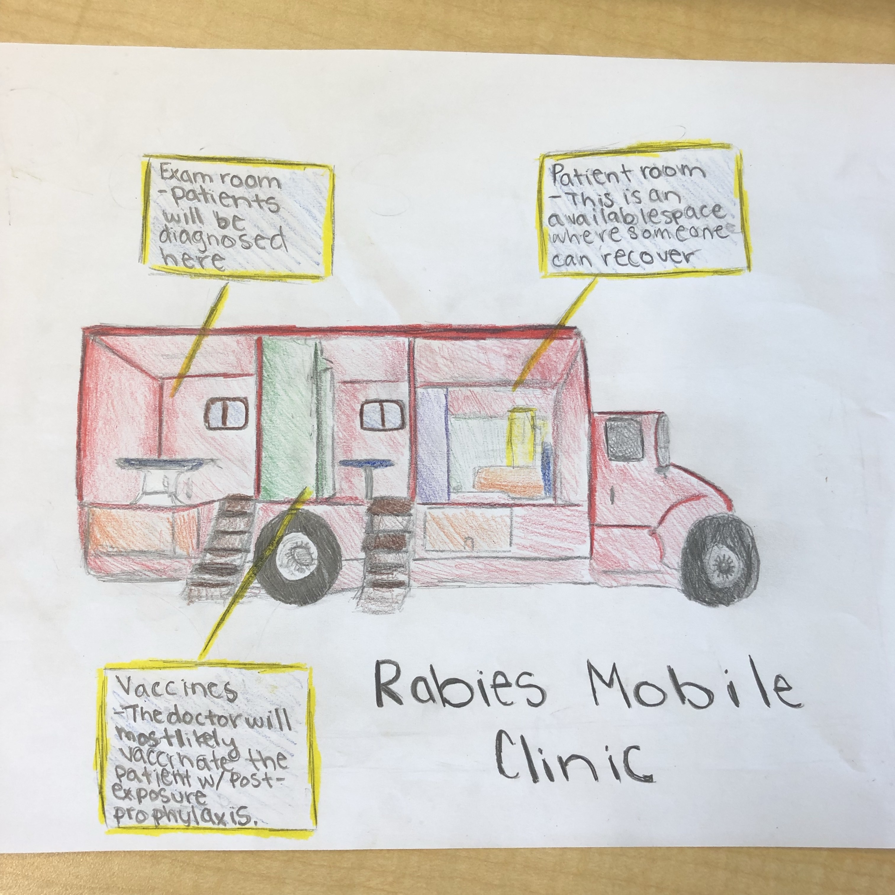
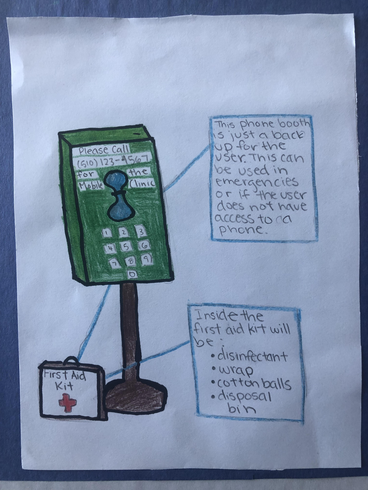

The solution for the disease rabies is a mobile clinic that is connected to a system of phone booths with first aid kits. The purpose of this is to boost the availability of tests and treatment for rabies.
So, for our mobile clinic, there is going to be three sections in our mobile clinic. The first section is the exam room. The exam room can be a place where the wound is examined by the doctor and check the wound. The second section, the vaccination room, would be where the doctor would prescribe the patient to post-exposure prohylaxis. The third section is the patient room where the patient can recover from their injuries and wound.
Pre-Exposure Prophylaxis is a vaccine used after a person is bitten by an animal or another infected person. This vaccines help boost the immune system along with helper T cells to prevent the virus from spreading. The vaccine is simply a weakened version of the rabies virus. This is safe, because your immune system fights it off.
